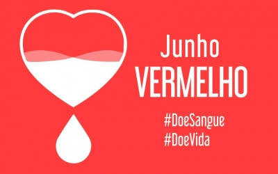

Doe sangue doe vida, é uma campanha que visa incentivar e conscientizar a população quanto a doação de sangue e seus beneficios
No mês de junho, comemora-se o junho vermelho, uma campanha criada pelo ministério da saúde em 2015 para incentivar o espírito solidário nas pessoas, mostrando que doar sangue é um ato de amor.
No dia 31/05 a partir das 09:00h, estaremos realizando uma palestra com um bate papo e sanando todas as duvidas sobre esse assunto, que é de imensa importância, então venha participar da nossa palestra e se informar sobre todos os benefícios que você pode oferecer sendo um doador de sangue.
O processo de doação de sangue dura, em média de quarenta minutos a uma hora. Nele é feito cadastro, aferição de sinais vitais, teste de anemia, triagem clinica, coleta do sangue. O voluntário também recebe um lanche e atestado médico após a doação.
O processo de doação de sangue dura, em média de quarenta minutos a uma hora. Nele é feito cadastro, aferição de sinais vitais, teste de anemia, triagem clinica, coleta do sangue. O voluntário também recebe um lanche e atestado médico após a doação.